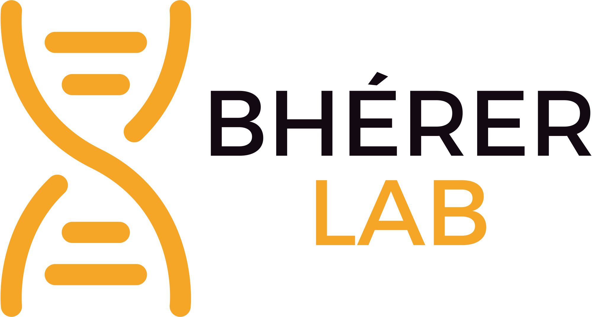
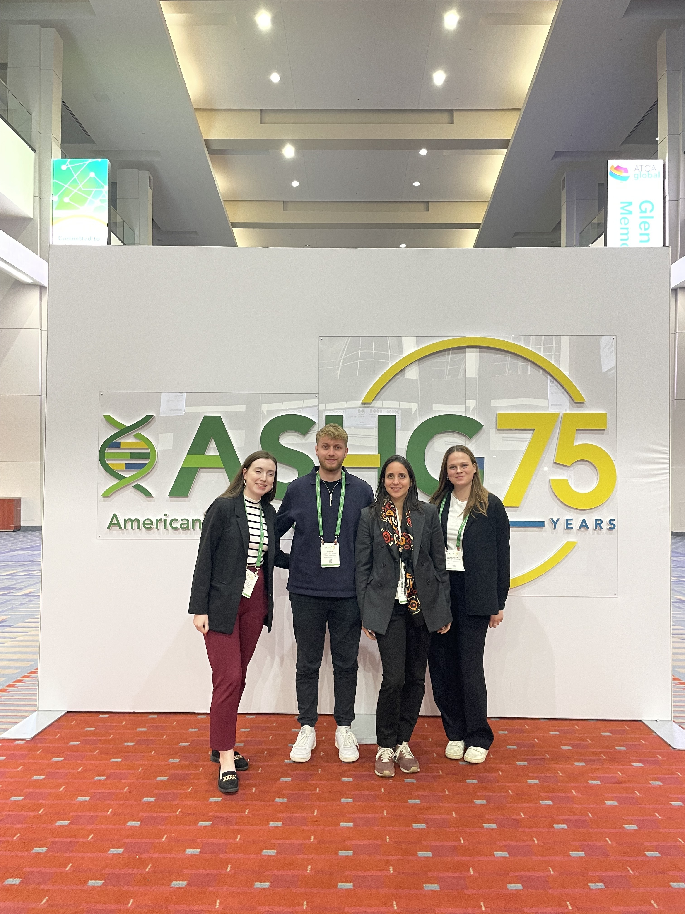

Population genetics
Research program
---

Research Goal
Study genetic variation in founder populations, some currently understudied, and better understand rare diseases present in these populations, using novel population and statistical genetics methods.
Research program
- Population genomics of founder populations
- Phenotypic spectrum of rare diseases
- Methods development for genomic health equity
Publications
-
Title of Newest Publication
Author(s), Journal Name, Year, DOI or other citation details
-
Title of Older Publication
Author(s), Journal Name, Year, DOI or other citation details
2024
Aug
Students joins the team
As the fall semester starts, we are happy to welcome Benjamin (PhD student) and Alexander (MSc student) to the team. Both will be working on methods development for Equity in Genomics. We are excited to see their contributions in advancing inclusive research methodologies that address disparities in genomic studies. We're thrilled to have them onboard and look forward to their impact in this vital area.
Mai
Lab outing
Description of the event
2023
Nov
ASHG 2023 annual meeting
Our lab members had an incredible experience at the ASHG 2023 Annual Conference, where they presented their research. It was a fantastic opportunity to connect with fellow geneticists, exchange ideas, and explore cutting-edge research from around the world. Engaging in lively discussions, networking with top experts, and discovering the latest advancements in human genetics made this event truly inspiring for our team.
Aug
Students joins the team
As the semester starts, we are happy to welcome Alyssa, Irene and Juliano to the team. Alyssa and Irene as supervised MSc students and Juliano as co-supervised MSc Student. We are excited to see the fresh perspectives they bring to our projects and look forward to their contributions to advancing our research. Their diverse backgrounds and enthusiasm for bioinformatics will undoubtedly enrich our lab's collaborative spirit. Welcome to the team, and we can't wait to see all the great work ahead!
2022
Mai
Claude joins McGill University

Aug
Description
2021
Mai
Claude joins McGill University
Description of the event
Resources
-
CERC Genomic Medicine github
Comprehensive pipelines for genomic data analysis.
-
CARTaGENE
CARTaGENE is a public research platform of the CHU Sainte-Justine aiming to accelerate health research. CARTaGENE is made up of both biological samples and data on the health and lifestyle of 43,000 Quebec men and women between the ages of 40 and 69 at recruitment.